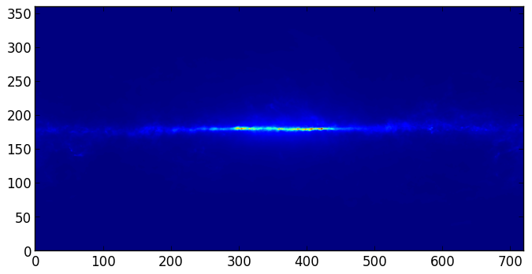

Handling FITS files¶
Note
If you are already familiar with PyFITS, astropy.io.fits is in fact the same code as the latest version of PyFITS, and you can adapt old scripts that use PyFITS to use Astropy by simply doing:
from astropy.io import fits as pyfits
However, for new scripts, we recommend the following import:
from astropy.io import fits
Documentation¶
For more information about the features presented below, you can read the astropy.io.fits docs.
Data¶
The data used in this page (gll_iem_v02_P6_V11_DIFFUSE.fit) is an old version of the LAT Background Model (Pass 6 V11 Diffuse front+back) which was chosen so as not to have to download the larger more recent file.
Reading FITS files and accessing data¶
Opening a FITS file is relatively straightforward. We can open the LAT Background Model included in the tutorial files:
>>> from astropy.io import fits
>>> hdulist = fits.open('gll_iem_v02_P6_V11_DIFFUSE.fit')
The returned object, hdulist, behaves like a Python list, and each element maps to a Header-Data Unit (HDU) in the FITS file. You can view more information about the FITS file with:
>>> hdulist.info()
Filename: gll_iem_v02_P6_V11_DIFFUSE.fit
No. Name Type Cards Dimensions Format
0 PRIMARY PrimaryHDU 34 (720, 360, 30) float32
1 ENERGIES BinTableHDU 19 30R x 1C [D]
As we can see, this file contains two HDUs. To access the primary HDU, which contains the main data, you can then do:
>>> hdu = hdulist[0]
The hdu object then has two important attributes: data, which behaves like a Numpy array, can be used to access the data, and header, which behaves like a dictionary, can be used to access the header information. First, we can take a look at the data:
>>> hdu.data.shape
(30, 360, 720)
This tells us that it is a 3-d cube. We can now take a peak at the header
>>> hdu.header
SIMPLE = T / Written by IDL: Thu Jan 20 07:19:05 2011
BITPIX = -32 /
NAXIS = 3 / number of data axes
NAXIS1 = 720 / length of data axis 1
NAXIS2 = 360 / length of data axis 2
NAXIS3 = 30 / length of data axis 3
EXTEND = T / FITS dataset may contain extensions
COMMENT FITS (Flexible Image Transport System) format is defined in 'Astronomy
COMMENT and Astrophysics', volume 376, page 359; bibcode: 2001A&A...376..359H
FLUX = 8.42259635886 /
CRVAL1 = 0. / Value of longitude in pixel CRPIX1
CDELT1 = 0.5 / Step size in longitude
CRPIX1 = 360.5 / Pixel that has value CRVAL1
CTYPE1 = 'GLON-CAR' / The type of parameter 1 (Galactic longitude in
CUNIT1 = 'deg ' / The unit of parameter 1
CRVAL2 = 0. / Value of latitude in pixel CRPIX2
CDELT2 = 0.5 / Step size in latitude
CRPIX2 = 180.5 / Pixel that has value CRVAL2
CTYPE2 = 'GLAT-CAR' / The type of parameter 2 (Galactic latitude in C
CUNIT2 = 'deg ' / The unit of parameter 2
CRVAL3 = 50. / Energy of pixel CRPIX3
CDELT3 = 0.113828620540137 / log10 of step size in energy (if it is logarith
CRPIX3 = 1. / Pixel that has value CRVAL3
CTYPE3 = 'photon energy' / Axis 3 is the spectra
CUNIT3 = 'MeV ' / The unit of axis 3
CHECKSUM= '3fdO3caL3caL3caL' / HDU checksum updated 2009-07-07T22:31:18
DATASUM = '2184619035' / data unit checksum updated 2009-07-07T22:31:18
DATE = '2009-07-07' /
FILENAME= '$TEMPDIR/diffuse/gll_iem_v02.fit' /File name with version number
TELESCOP= 'GLAST ' /
INSTRUME= 'LAT ' /
ORIGIN = 'LISOC ' /LAT team product delivered from the LISOC
OBSERVER= 'MICHELSON' /Instrument PI
HISTORY Scaled version of gll_iem_v02.fit for use with P6_V11_DIFFUSE
which shows that this is a Plate Carrée (-CAR) projection in Galactic Coordinates, and the third axis is photon energy. We can access individual header keywords using standard item notation:
>>> hdu.header['TELESCOP']
'GLAST'
>>> hdu.header['INSTRUME']
'LAT'
Provided that we started up ipython with the --matplotlib flag and did import matplotlib.pyplot as plt, we can plot one of the slices in photon energy:
>>> plt.imshow(hdu.data[0,:,:], origin='lower')
which gives:
Note that this is just a plot of an array, so the coordinates are just pixel coordinates at this stage. The data is stored with longitude increasing to the right (the opposite of the normal convention), but the Level 3 problem at the bottom of this page shows how to correctly flip the image.
Modifying data or header information in a FITS file object is easy. We can update existing header keywords:
>>> hdu.header['TELESCOP'] = "Fermi Gamma-ray Space Telescope"
or add new ones:
>>> hdu.header['MODIFIED'] = '26 Feb 2013' # adds a new keyword
and we can also change the data, for example extracting only the first slice in photon energy:
>>> hdu.data = hdu.data[0,:,:]
Note that this does not change the original FITS file, simply the FITS file object in memory. Note that since the data is now 2-dimensional, we can remove the WCS keywords for the third dimension:
hdu.header.remove('CRPIX3')
hdu.header.remove('CRVAL3')
hdu.header.remove('CDELT3')
hdu.header.remove('CUNIT3')
hdu.header.remove('CTYPE3')
You can write the FITS file object to a file with:
>>> hdu.writeto('lat_background_model_slice.fits')
if you want to simply write out this HDU to a file, or:
>>> hdulist.writeto('lat_background_model_slice_allhdus.fits')
if you want to write out all of the original HDUs, including the modified one, to a file.
Creating a FITS file from scratch¶
If you want to create a FITS file from scratch, you need to start off by creating an HDU object:
>>> hdu = fits.PrimaryHDU()
and you can then populate the data and header attributes with whatever information you like:
>>> import numpy as np
>>> hdu.data = np.random.random((128,128))
Note that setting the data automatically populates the header with basic information:
>>> hdu.header
SIMPLE = T / conforms to FITS standard
BITPIX = -64 / array data type
NAXIS = 2 / number of array dimensions
NAXIS1 = 128
NAXIS2 = 128
EXTEND = T
and you should never have to set header keywords such as NAXIS, NAXIS1, and so on manually. We can then set additional header keywords:
>>> hdu.header['telescop'] = 'Python Observatory'
and we can then write out the FITS file to disk:
>>> hdu.writeto('random_array.fits')
If the file already exists, you can overwrite it with:
>>> hdu.writeto('random_array.fits', clobber=True)
Convenience functions¶
In cases where you just want to access the data or header in a specific HDU, you can use the following convenience functions:
>>> data = fits.getdata('gll_iem_v02_P6_V11_DIFFUSE.fit')
>>> header = fits.getheader('gll_iem_v02_P6_V11_DIFFUSE.fit')
To get the data or header for an HDU other than the first, you can specify the extension name or index. The second HDU is called energies, so we can do:
>>> data = fits.getdata('gll_iem_v02_P6_V11_DIFFUSE.fit', extname='energies')
or:
>>> data = fits.getdata('gll_iem_v02_P6_V11_DIFFUSE.fit', ext=1)
and similarly for getheader.
Accessing Tabular Data¶
In Astropy 0.2, FITS tables cannot be read/written directly from the Table class. To create a Table object from a FITS table, you can use astropy.io.fits:
>>> from astropy.io import fits
>>> from astropy.table import Table
>>> data = fits.getdata('catalog.fits', 1)
>>> t = Table(data)
and to write out, you can use astropy.io.fits, converting the table to a Numpy array:
>>> fits.writeto('new_catalog.fits', np.array(t))
The main drawback of the current approach is that table metadata like UCDs and other FITS header keywords are lost. Future versions of Astropy will support reading/writing FITS tables directly from the Table class.
Practical Exercises¶
Excercise
Read in the LAT Point Source Catalog and make a scatter plot of the Galactic Coordinates of the sources (complete with axis labels). Bonus points if you can make the plot go between -180 and 180 instead of 0 and 360 degrees. Note that the Point Source Catalog contains the Galactic Coordinates, so no need to convert them.
Click to Show/Hide Solution
from astropy.io import fits
from astropy.table import Table
from matplotlib import pyplot as plt
# Read in Point Source Catalog
data = fits.getdata('gll_psc_v08.fit',1)
psc = Table(data)
# Extract Galactic Coordinates
l = psc['GLON']
b = psc['GLAT']
# Coordinates from 0 to 360, wrap to -180 to 180 to match image
l[l > 180.] -= 360.
# Plot the image
fig = plt.figure()
ax = fig.add_subplot(1, 1, 1, aspect='equal')
ax.scatter(l, b)
ax.set_xlim(180., -180.)
ax.set_ylim(-90., 90.)
ax.set_xlabel('Galactic Longitude')
ax.set_ylabel('Galactic Latitude')
fig.savefig('fits_level2.png', bbox_inches='tight')

Advanced exercise
Using Matplotlib, make an all-sky plot of the LAT Background Model in the Plate Carée projection showing the LAT Point Source Catalog overlaid with markers, and with the correct coordinates on the axes. You should do this using only astropy.io.fits, Numpy, and Matplotlib (no WCS or coordinate conversion library). Hint: the -CAR projection is such that the x pixel position is proportional to longitude, and the y pixel position to latitude. Bonus points for a pretty colormap.
Click to Show/Hide Solution
# this continues from the previous exercise
# Read in Background Model
hdulist = fits.open('gll_iem_v02_P6_V11_DIFFUSE.fit')
bg = hdulist[0].data[0, :, :]
# Plot the image
fig = plt.figure()
ax = fig.add_subplot(1, 1, 1)
ax.imshow(bg ** 0.5, extent=[-180., 180., -90., 90.], cmap=plt.cm.gist_heat,
origin='lower', vmin=0, vmax=2e-3)
ax.scatter(l, b, s=10, edgecolor='none', facecolor='blue', alpha=0.5)
ax.set_xlim(180., -180.)
ax.set_ylim(-90., 90.)
ax.set_xlabel('Galactic Longitude')
ax.set_ylabel('Galactic Latitude')
fig.savefig('fits_level3.png', bbox_inches='tight')